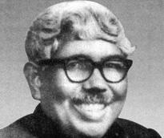

|
|
|
|||
|
|
||||
|
|
||||
|
|
On Martyred Intellectual Prof. G.C. Dev By Jahed Ahmed “The subject matter of philosophy, as I conceive it, is not simply what other philosophers have said on the metalevel. Philosophers must descend into the concrete world of human practice and belief, sweat and toil like the rest of humanity within marketplace of ideas and images to find meanings and uncover truth.” -Paul Kurtz, Secular Humanist philosopher

Introduction:
Great minds think alike.
Very similar to What Paul Kurtz said above was said by a humanist philosopher of Bangladesh, some thirty to forty years
ago. His name is Govinda Chandra Dev, popularly known as Professor G. C.
Dev. “Any philosophy that has no connection with reality of life is merely an
abstract theory and such philosophy is not a real philosophy,” is one of the
famous sayings of Prof. G. C. Dev. For those of us who think “plain living
and high thinking” is just a theory, and cannot be a life style, I would
say, they (or us) may not have heard of Professor G. C. Dev. He lived his
whole life as a “plain living and high thinking" man until he was
killed by the Pakistani Army along with thousands of other innocent
Bengali males, females, and children in Dhaka on the night of 25th
March, 1971. Birth and Childhood: G. C. Dev was born on 1st January in 1907 in the village of Lauta in Panchakhanda Porgana (present Biyani Bazar Thana) of Sylhet district in Bangladesh. Although his father was a small business-man, Dev’s family, however, initially was financially stable. Over the time his father faced a tremendous fiscal loss and having not being able to cope up psychologically with the loss had died consequently while leaving his son Dev as a small child. The incident had left a deep impact on child Dev’s mind and he left home at a very early stage of his life. For the rest eight long years, Dev was reared with affection by a Christian missionary which provided him financial and moral-spiritual guidance. Although Dev didn't forget his early experience with Christian missionaries, he nevertheless came up with his own personal philosophy over the time. We will come to that later. Academic Education: As a student, Dev proved himself meritorious from the early academic stage of his life. In 1925, he passed through the Matriculation from the local Panchakhanda Horo Govinda high school (the school still is in existence in Biyani Bazar, Sylhet, BD) with 1st class. From there he qualified higher secondary examination in 1927, again in 1st class with special honor in Logic. At this stage, G.C. Dev moved to Calcutta. In 1929, from the Calcutta Sanskrit College he obtained B.A. (honors) degree in Philosophy. Subsequently in 1931, Dev obtained M.A. degree from Calcutta University with 1st class while standing at the top of the list among all his peers. There Dev came across prominent thinkers and philosophers of that time such as Dr. Hiralal Haldar, Dr. Surendra Das Gupta and Prof. Krishna Chanda Bhttacharya.In 1944 G.C. Dev received his Ph.D. upon submission of long-researched thesis entitled “Reason, Intuition and Reality” which was later published as a book named “Idealism and Progress.” Dr. G.C. Dev then started his career as a lecturer in Calcutta’s Ripon College. Due to chaotic situations during World War II, the college was transferred from Calcutta to Dinajpur (now in Bangladesh). At the same time Dr. Dev also moved to Dinajpur as a professor. Although later in 1945 the college was re-shifted to Calcutta, Prof. Dr. Dev decided to stay back in Dinajpur where he established Surendranath College, and became its founding principal. In the July of 1953, Dr. G.C. Dev joined Philosophy department of Dhaka University, Bangladesh. As an additional responsibility, he also served as the house tutor of Dhaka hall (present Shahidullah hall) in 1957. In the same year in July, he was appointed as the provost of Jagannath hall and remained so until April 1970. In 1963, G.C. Dev was appointed as the chairman in the dept. of philosophy and became a full professor on 1st July of 1967. A Philosopher in Action: A distinguishing feature of Prof. G.C. Dev was that- unlike many of his contemporaries, he didn’t confine philosophy and its wisdom simply to the sphere of academic discipline, or as an abstract subject matter. He was a man of action alongside being a man of wisdom. This trait has been reflected in various stages of his life. To name a few instances:
Synthetic Idealism and Dr. G. C. Dev: By virtue of birth and family environment, Dev as a child was familiar with most core concepts of the ancient Indian philosophy, in particular Hinduism and Sanskrit tradition. However, his childhood experience and affectionate care he received from the Christian missionaries was always vivid in his memory. In fact, the two parallel but seemingly paradoxical aspects of philosophy that later paved the way for Dev to synthesize his own and unique personal philosophy were: spiritualism and materialism. In his own words:
Further he said he never would have realized the importance of materialistic possessions, had his father not faced the pitfall of the poverty from a stable wealth and richness all-of-a-sudden basis. Therefore, both knowledge of spirituality and materialism he experienced during his childhood and adolescence period equally helped G.C. Dev embrace many obstacles of life with a smiling and inspirational face. The strong spiritual faith, on one hand, helped him during dark stage of his life; on the other hand, equally strong experience of materialism took him close to poor class and helped him become one of them. He said:
Here G.C. Dev differs significantly from many of his contemporaries. To him, philosophy is more than just all-metaphysics, or all-abstract analytical erudition. Neither has he considered abstract theory as core basis of philosophy, nor has he agreed- the duty of philosophy should be mere analysis of linguistics without any theoretical basis. I feel tempted to cite here a strangely similar comment made by today’s esteemed humanist philosopher Paul Kurtz:
What is even stranger- long ago Prof. G.C. Dev announced: “When today’s philosophy is floating randomly and without any direction in the ocean of life like a rudder-less boat; it is of utmost importance to establish its link to a productive life.” According to philosopher Prof. G.C. Dev, the origin and development of philosophy lies in natural human curiosity about life and nature, a tendency to glorify life further. Therefore, philosophy cannot exist without people. However, we need to keep in mind- G.C. Dev didn’t rule out the importance of metaphysical questions in Philosophy. All he said- such should not be the sole objective of philosophy since there are other areas of studies, which are no less connected to life, if not more, than metaphysics: Social philosophy, Political philosophy and of course, philosophy of history. Interestingly, to philosopher G.C. Dev, conflicts/tensions between idealism and materialism do not exist! “The so called conflict between the two is not so much as a matter of theory, as it is a matter of mentality”, announces Dev. He continues:
Dev further elaborates his philosophical views:
Such were the hopes and faiths of Dr. G. C. Dev. Indeed this is the whole essence of his personal philosophy (“synthetic idealism”). Features of his spiritual beliefs: Dev found his own way in philosophy through adoption of a 'middle path' which is a combination of ancient 'moderate philosophy' of Buddha, Veda-Upanishad and Bhagabhat Geeta. For Dev, it didn’t contradict itself with the Western monotheistic religions. His spiritual ideology was based on the unity of the universe and mankind, as pointed out in Upanishad-Veda. This ideal of unity is not based on any provincial religious outlook, or any personal God, even though he believed in single entity as the ultimate driving force behind the universe. Such ideal, if analyzed carefully, is the essence of all historical Eastern and Western religions and philosophies. According to this philosophy, the same entity manifests itself in different forms and angles in whole universe- sometimes as a matter, sometimes as a conscience. At one place if it is single, in other place, same is present in multiples. The life and the universe should be explained based on the inner unity of what we may see in multiples, that’s the opinion Dr. G.C. Dev held. Philosopher Dev solicited the unity among different persons, nations, races and in the spheres of different levels of human relations such as at social, political and religious based on this view. Through life-long observation, Dev had seen it for himself common people are lured more toward faith than logic. They find religion more appealing than philosophy. This is said to be one of the main reasons, why Dev adhered to synthetic idealism. As just mentioned- the kind of religion he believed in was not a conventional one; on the contrary, it was a universal religion based on love and admiration for all mankind of the planet--one that would not, and need not compete with other religions to exert its “superiority”. In this sense, Dev was a believer, but an altruistic one, so rarely seen in today’s society. Books by Dev in English: Idealism and Progress; Idealism: A New Defense and a New Application; Aspirations of the common Man; Buddha the humanist; Parables of the East and My American Experience (last two were published posthumously from Dhaka University with Prof. Dr. Aminul Islam as editor). In Bangla: Amar Jibondorshon (My philosophy of life); Totwobidya sar (Essence of Theoretical knowledge) and Govinda Chandra Dev Rochonabolee (Collected Essays by Govinda Chandra Dev in three volumes, edited by prominent Bangladeshi writer Hassan Azizul Hoque and published by Bangla Academy, Dhaka)
A personal addition:
Having been born in a place which witnessed G.C. Dev's birth, like many other people
of Bangladeshi origin, I heard of his name too, although not in details. I
knew him as a philosopher-cum-a-martyr of 1971
war and a life long bachelor. An interesting fact however remained hidden to me until a few days ago:
that Dr. G.C. Dev
indeed had a foster-son at the later stage of his life who is now living in
New York State! Thanks to a fellow writer friend who also lives in New
York.
Concluding Remarks: It goes without saying- by virtue of the advancements in science and technology mankind is now much more powerful it was in the past. The new discoveries that we are watching almost on a day-to-day basis is changing the world scenario drastically and rapidly. But despite such materialistic progress, we have yet to find a way out toward a long lasting and peaceful coexistence. Alongside new discoveries, we are flooded with news of killings and violence committed mostly by none but our fellow humans! Prof. G.C. Dev was killed in a brutal and cowardly attack by Pakistani Army in 1971 without having allowing him any opportunity for self-defense. “Don’t worry, since death can only destroy my body but not souls,” was the remark of Greek philosopher Socrates toward his grief-stricken followers and relatives prior to the death by drinking Hemlock (a lethal poison). Whether one believes in the existence of soul or not, or for that matter, in Dev’s synthetic philosophy; it would be quite safe to conclude- examples of altruism, love for mankind, and selflessness shown by Prof. Dr. G.C. Dev would inspire generations to come--both within and beyond Bangladesh. If not all, at least those--who consider their first and foremost identity as a human being--would not and cannot be forgetful of G.C. Dev. ______ (First published on 14th December, 2004; revised and republished on 16th Dec. 2006.) Credits: Major reference: Bangalir Dorshan: Prachinkal Theke Somokal by Prof. Dr. Aminul Islam, Dept. of Philosophy, DU, (Maola Brothers, Dhaka, 2002), pp. 247-258 Picture by the courtesy of: http://banglapedia.search.com.bd/HT/D_0126.htm Other references: 1) Paul Kurtz, the Transcendental Temptation: A Critique of Religion and the Paranormal (Amherst, New York: Prometheus Books, 1991), pp. 7, 3. 2) Dr. Jyoti P. Dutta, NY, USA 3) Dept. of Philosophy, Dhaka University, Bangladesh (http://www.univdhaka.edu/univdhaka/Dept_of_Philosophy.htm)
4) G.C.
Dev
Center,
Dhaka
University
(http://banglapedia.search.com.bd/HT/D_0125.HTM) |
|
||
|
|
|
|||